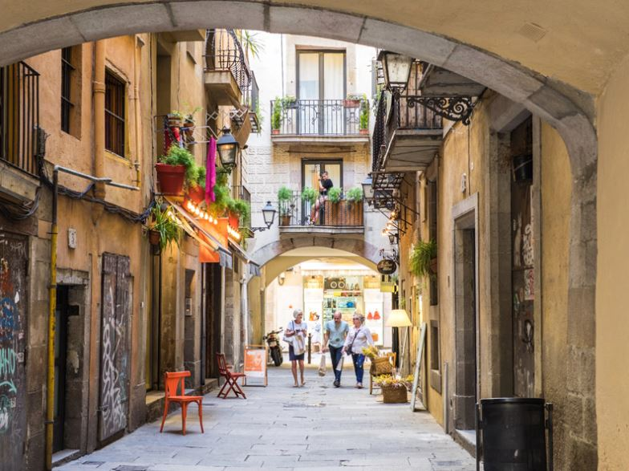
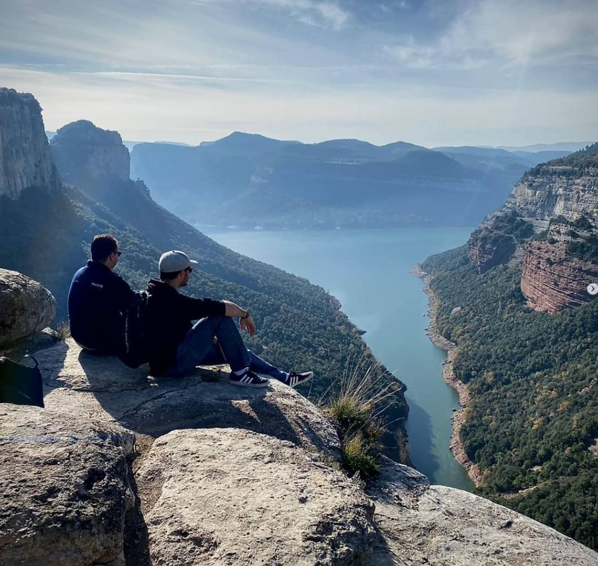
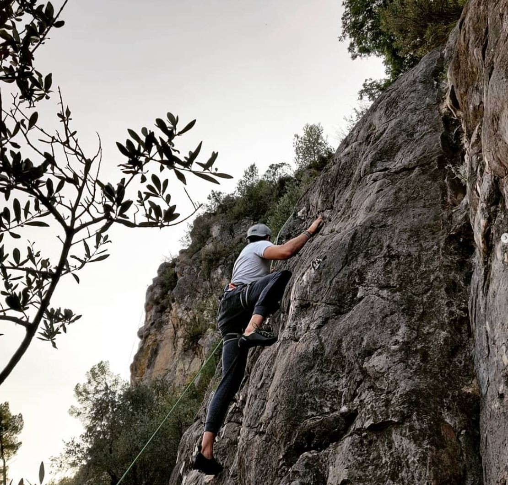
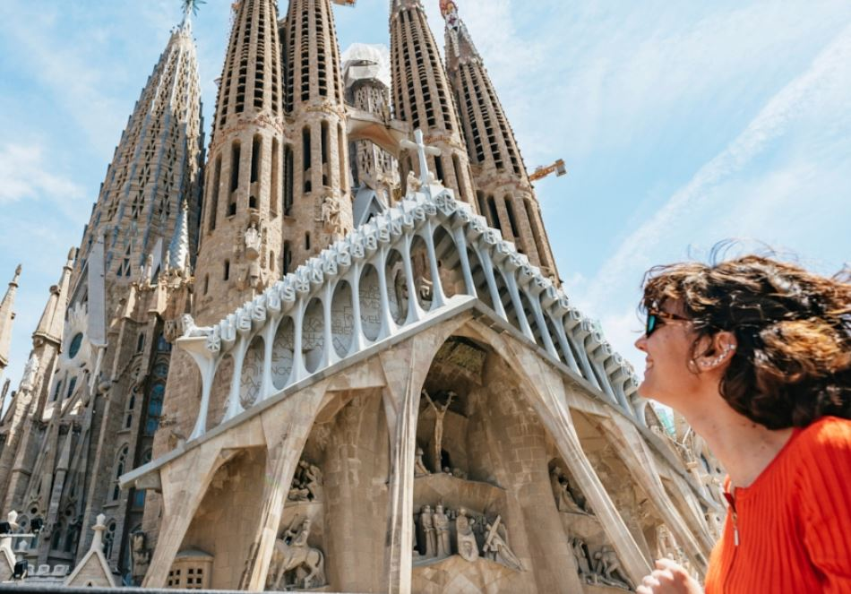
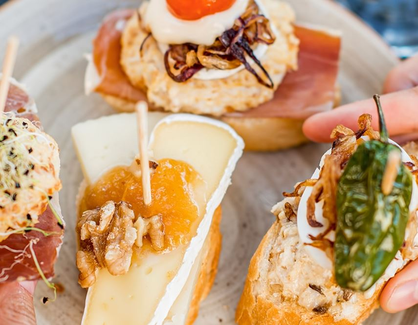
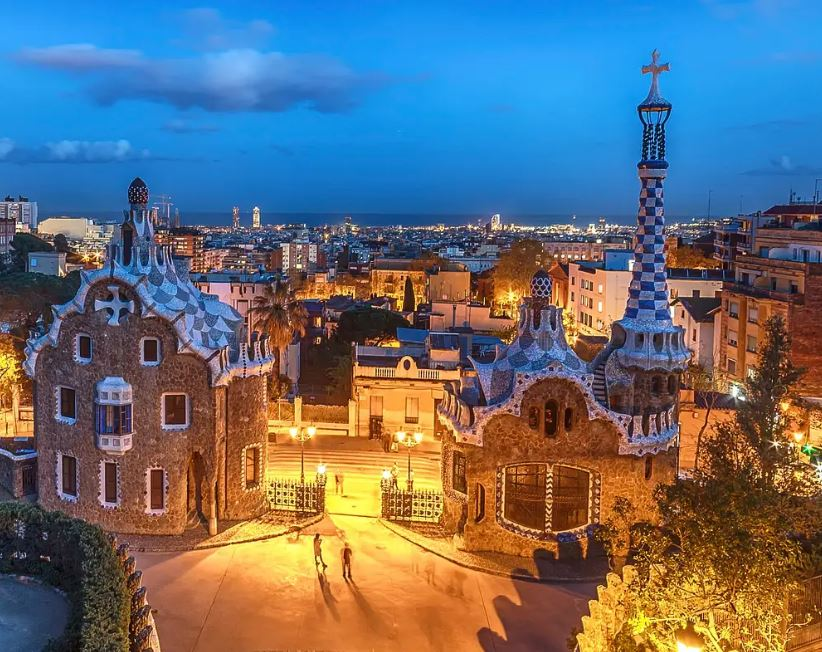

Hola soy Javi!
Soy Javi, guía local con más de 15 años de experiencia recorriendo cada rincón de Barcelona. Te invito a descubrir la verdadera esencia de mi ciudad adoptiva a través de rutas auténticas y personalizadas.
Soy Javi, guía local con más de 15 años de experiencia recorriendo cada rincón de Barcelona. Te invito a descubrir la verdadera esencia de mi ciudad adoptiva a través de rutas auténticas y personalizadas.
La arquitectura vanguardista de Gaudí, sus playas urbanas y sus tapas nocturnas hacen que Barcelona sea fácil de amar. Piérdete en el Barrio Gótico, recorre los mercados y luego sube a una colina para contemplar la puesta de sol: la energía de una gran ciudad con el ritmo relajado del Mediterráneo.

Sus grandes hojas verdes y perforadas transforman la luz en calma visual, llenando el ambiente de frescura y equilibrio.

Sus grandes hojas verdes y perforadas transforman la luz en calma visual, llenando el ambiente de frescura y equilibrio.

Sus grandes hojas verdes y perforadas transforman la luz en calma visual, llenando el ambiente de frescura y equilibrio.
Sus grandes hojas verdes y perforadas transforman la luz en calma visual, llenando el ambiente de frescura y equilibrio.

La Sagrada Familia es uno de los monumentos más visitados...
15 Junio 2024
¿Sabes distinguir las patatas bravas de las croquetas? esta guía de tapas de Barcelona...
18 Marzo 2025
Vive la magia de Barcelona en Navidad, con sus mercados navideños, sus desfiles especiales y la misa de medianoche en la emblemática Sagrada Familia.
27 noviembre 2025